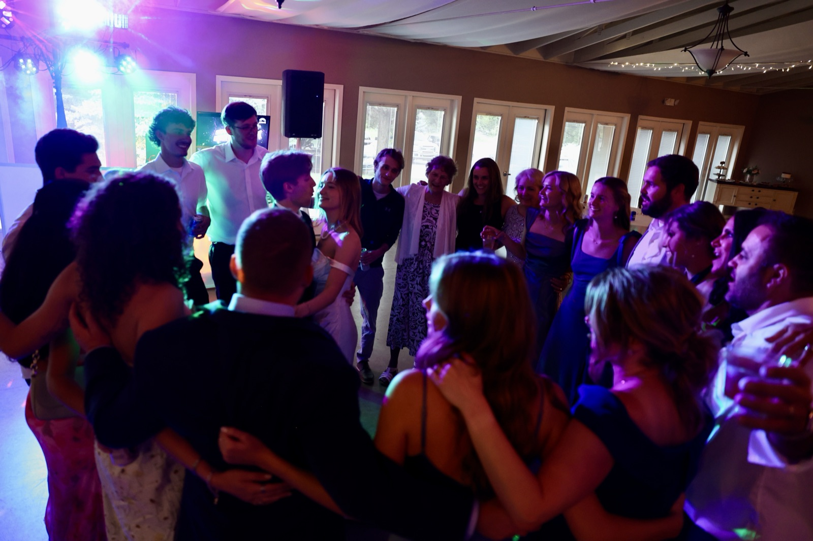
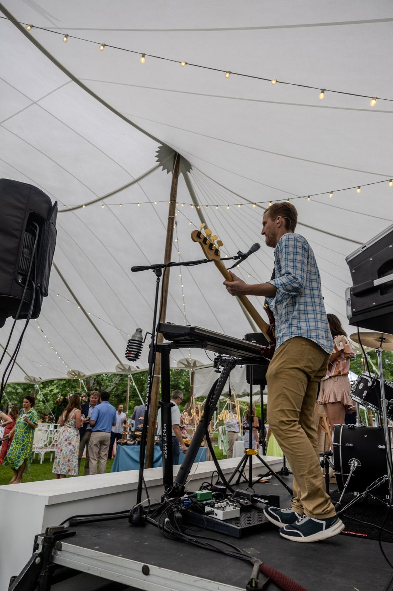
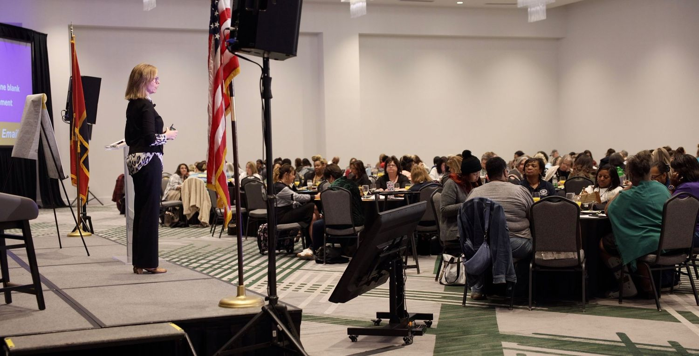
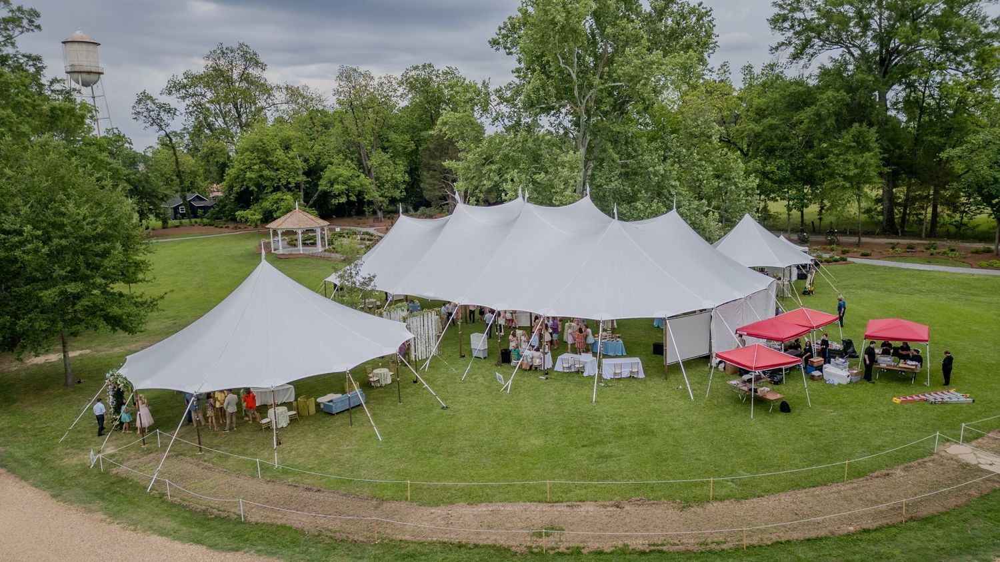
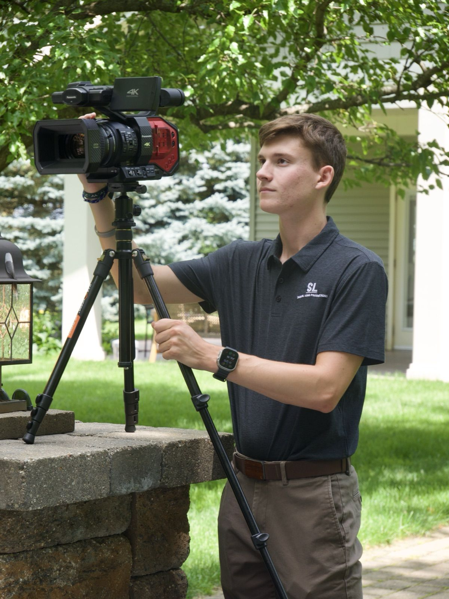

Parties and celebrations
Birthdays, engagement parties, rehearsal dinners, showers and holiday parties, at a venue downtown or at home.

I'm Samuel Long, an event photographer based in Oxford. I photograph parties, galas, fundraisers, conferences and celebrations around town and at Ole Miss, and I can film a short recap video of the night too.
Big night or small gathering, on the Square, in the Grove or at a house out in the county. Here's what I cover in Oxford and around Ole Miss.
Birthdays, engagement parties, rehearsal dinners, showers and holiday parties, at a venue downtown or at home.
Arrivals, the room, the speeches, the auction and the people you'll want to thank afterward.
Keynotes, panels, awards dinners and networking, with photos ready for your recap post, your website and next year's promotion.
Tailgates in the Grove and game day gatherings for families, alumni groups and businesses hosting clients.
Ole Miss graduation parties and family dinners. I also shoot cap and gown photos on campus the same weekend.
Dances, banquets, reunions, festivals and community events in Oxford and Lafayette County.
A reception dance floor, a keynote in a full ballroom, a garden party under sailcloth tents, and two friends before a party in Oxford.





Before the event we go over the timeline, the people who need to be in the photos and any group shots you want. Then I work the room: candids, the details you planned, the speeches and the dance floor.
For bigger events I bring on additional photographers so the whole room is covered. If you want video, I can film a short recap of the night, and I'm an FAA Part 107 certified drone pilot, so I can add aerials where the venue and the airspace allow it.
Your edited photos come in a private online gallery that's easy to share with your guests.

It depends on how long the event runs, how many guests are coming and whether you want video too, so I quote each event on its own. Send me the date, the venue and a rough guest count and I'll reply with a quote, usually within a day.
For bigger events, yes. I bring on additional photographers so the whole room is covered, and I'll tell you how many I'd recommend when I send your quote.
Yes. I can film a short recap video alongside the photos and add drone footage where it's permitted. I'm an FAA Part 107 certified drone pilot.
Your edited photos come in a private online gallery you can share with your guests. I'll give you a delivery date with your quote.
Anywhere in Oxford and around Ole Miss, from the Square and the Grove to private homes and venues out in Lafayette County. I'm also based in Madison, so I cover the Jackson metro and the rest of North Mississippi too.
Send me the date, the venue and roughly how many people are coming, and I'll put together a quote. I read every message myself and usually reply within a day. You can also email samuel@samuellongproductions.com or find me on Instagram.
Get a quote